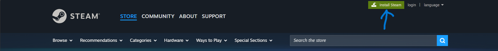

Introduction
Great! You are interested in using your Chromebook to its full potential. This article will provide you with instructions to set up
My Experience
Hi there! I'm @sharmnten on GitHub, and am the author of this guide. I have about 5 years of coding experience with JavaScript, Python, Java, and HTML/CSS. I am a full-stack developer, and am also a game developer. Additionally, I sometimes play videogames. A Chromebook was my first computer, and I own a plethora of Chromebooks of various ages, makes and models that I have required across my schooling, and a few that I bought. Around last year, I was trying to find another use for these Chromebooks, as I wanted a lightweight device that allowed me to do some development away from my main computer (Windows). I was interested in the Linux development environment as I recalled on many of the pages for software I downloaded, there was a Linux install option. Doing a little bit of research, this was the best way I determined to get Linux setup on a Chromebook.
Note: For those interested in gaming, I have included steps on how to install Steam and additional advice after the Linux setup section of the article.
Linux Installation
Prerequisites
Before we begin, ensure that your Chromebook meets the following requirements:
- Your Chromebook supports Linux (
Crostini ). Most Chromebooks released in 2019 or later do. - You have a stable internet connection.
- You have at least 32 GB of storage space.
- Knowledge of how to access settings and system specifications.
Warning: For the simplicity of this tutorial, I am assuming you have a solid understanding of how to use ChromeOS, and are comfortable navigating the settings and system information pages.
Enabling Linux
To enable Linux on your Chromebook, follow these steps:
- Open the Settings app on your Chromebook.
- Scroll down to the "Linux (Beta)" section.
- Click "Turn On" to start the setup process.
- Follow the on-screen instructions to complete the installation. You may be prompted to allocate disk space for Linux; choose an appropriate amount based on your needs.
- Once the installation is complete, a terminal window will open, indicating that Linux is ready to use.
Warning: Crostini is still a
Learning Linux and Tips
Now that you have installed Linux, you will have to learn how to use it. Linux is different than any other operating system because the user interacts with the terminal more frequently. For Crostini, no
Package Management
Debian package management is handled by the apt command. The commands below install and remove packages, respectively. Packages are really important in Linux, as they allow you to expand the capabilities of your system.
File Navigation
In order to navigate your files, it is helpful to know what files are available in the current directory, and also where you are located within the filesystem. Inorder to do this, we use the command ls this command lists all of the files and directories that are in the current directory.
This next command puts you into the directory that you specify after the cd. It has to be in contained in the directory you are currently in.
This is the command to go back to the
While using the terminal alone works, there is one package I recommend for managing your disk:
This package provides a
Updating Your System
When using Linux, updating your operating system
System Maintenance and Advice
When doing large package operations, it is a good idea to clean up unnecessary files afterwards. You can do this by running the following command:
System Optimization
After installing Linux, it's a good idea to update your system and install essential
Gaming and Steam
Installing Steam
Go to Steam's website and click the green Install Steam button.
Game Recommendations
Because Linux support is not as good as Windows, game compatibility varies.
Additional Gaming Tips
- Itch.io works pretty nicely to get free games. Download the store application from their website, and you can find many free games with Linux support.
- Minecraft, while not free, works pretty well on Linux, as long as you install the correct Java packages and are happy with a small render distance.
- At the time of writing this article, controllers don't work through Crostini.
Performance Tweaks
Tips for improving performance will go here.